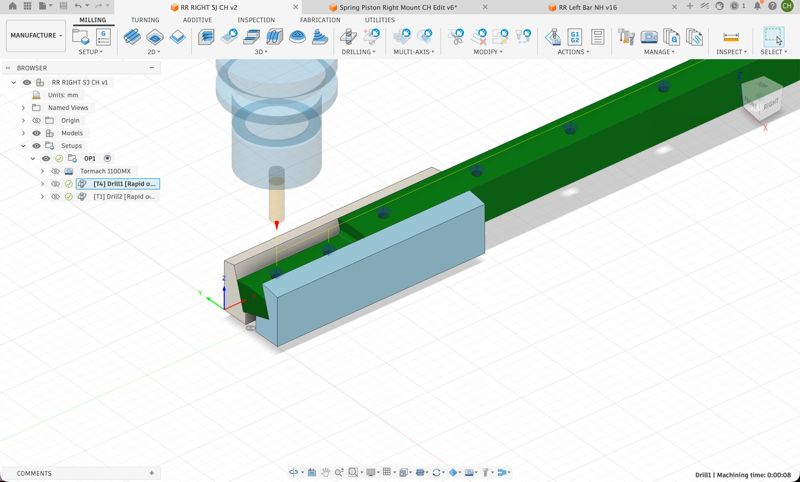
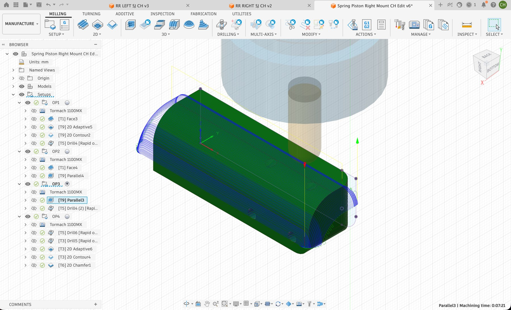
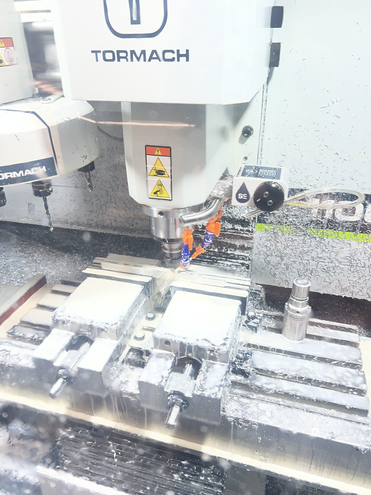
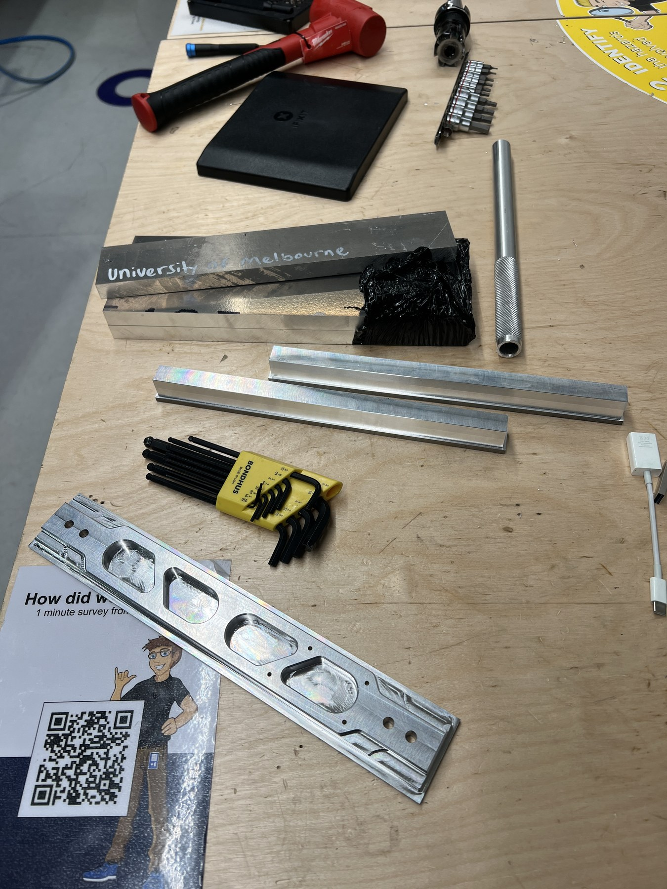
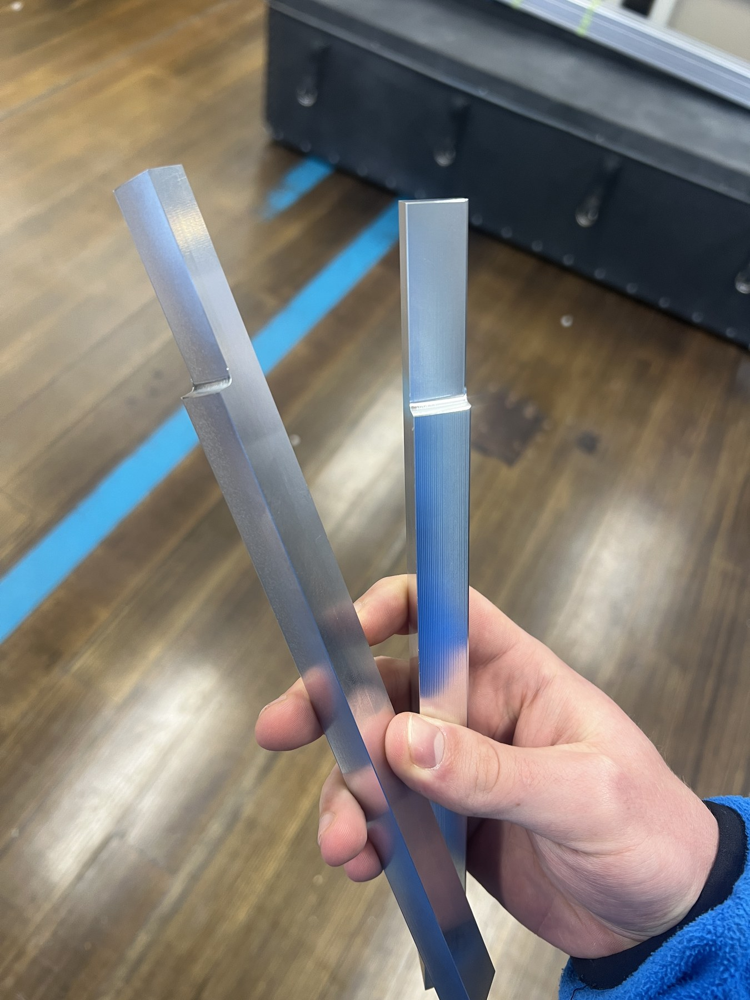

Overview
As part of my role at ARES, I handle the full manufacturing pipeline for machined components — writing CAM toolpaths in Fusion 360, setting up workholding, operating the Tormach 1100MX, and post-processing parts to the tolerances required for propulsion and recovery systems.
For components with complex geometry that standard vices can't hold reliably, I design and 3D-print custom soft jaws — a fast, low-cost alternative to machined aluminium jaws that lets us hold irregular or near-net-shape parts securely through multiple setups.
| Machine | Tormach 1100MX — 3-axis CNC mill |
| CAM software | Fusion 360 |
| Materials | 6061 Aluminium, Delrin |
| Components | Recovery rail guides, spring piston mounts, structural brackets |
| Workholding | Standard vice + 3D-printed custom soft jaws |
CAM Programming
Each component starts with a Fusion 360 CAM setup — selecting operations, tools, feeds and speeds, and simulating the full toolpath before sending G-code to the machine. Multi-setup parts are broken into operations that can be re-fixtured reliably, minimising accumulated error across setups.
For the spring piston mounts, the CAM involved multiple operations: adaptive clearing to remove bulk material, 2D contour finishing, drilling, and chamfering — all sequenced to maintain part rigidity through the cut.


Left: Fusion 360 CAM setup for recovery rail guide components. Right: Spring piston mount — multi-operation CAM with adaptive clearing, contour finishing, drilling, and chamfer.
Machining
Parts are machined on the team's Tormach 1100MX using flood coolant for aluminium cuts. Fixturing and datum setup are done manually at the start of each session, with offsets verified against reference surfaces before running any toolpaths.


Left: Tormach 1100MX during a machining run — flood coolant on an aluminium component. Right: Finished recovery rail components and tooling at the bench.
Finished Components
Machined parts are deburred, inspected, and checked against drawing tolerances before being handed off to the relevant sub-team. The recovery rail guides shown below were machined from 6061 aluminium stock and require a consistent slot profile to interface correctly with the launch rail.

Finished 6061 aluminium recovery rail guides — machined to drawing tolerances on the Tormach.